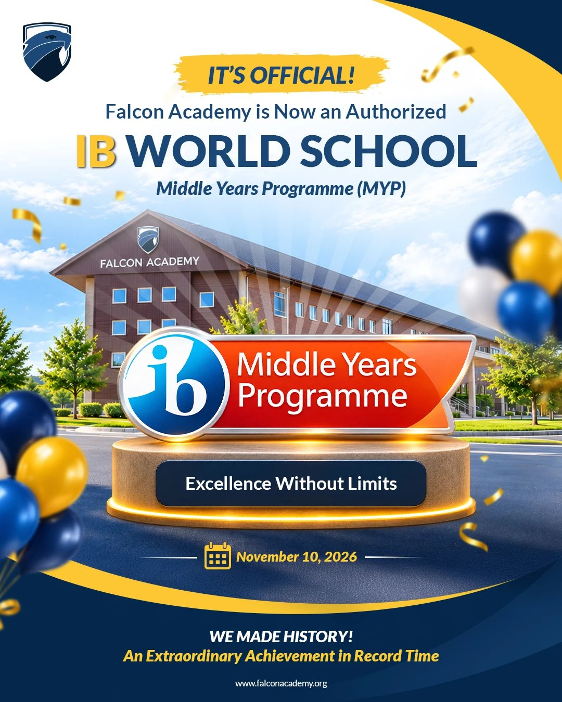
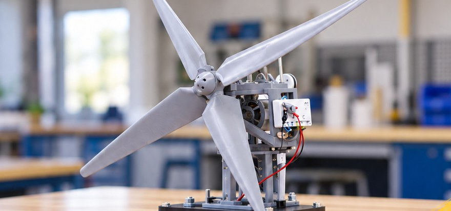
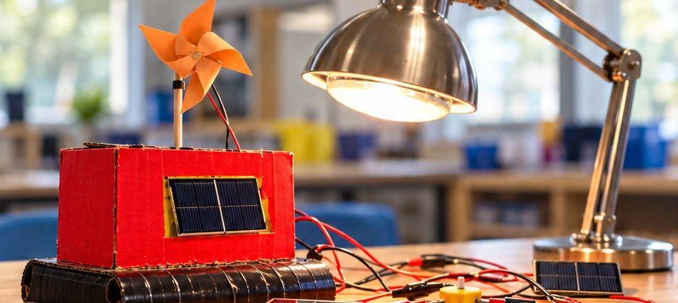
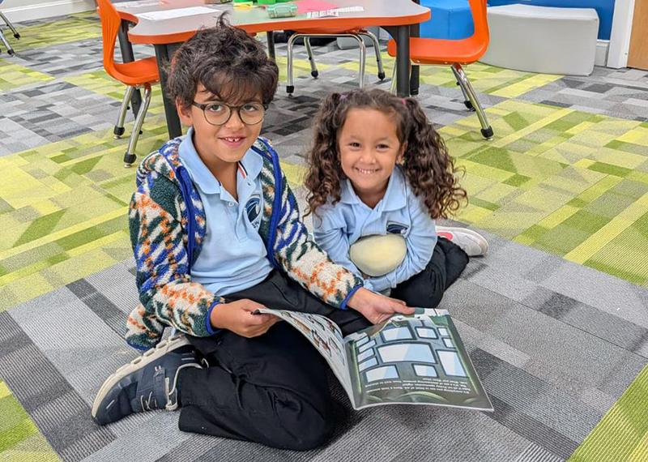
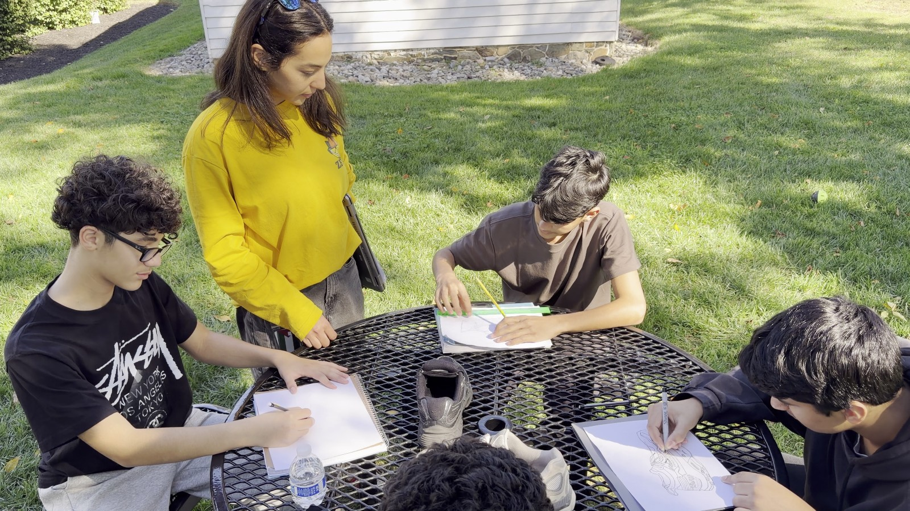
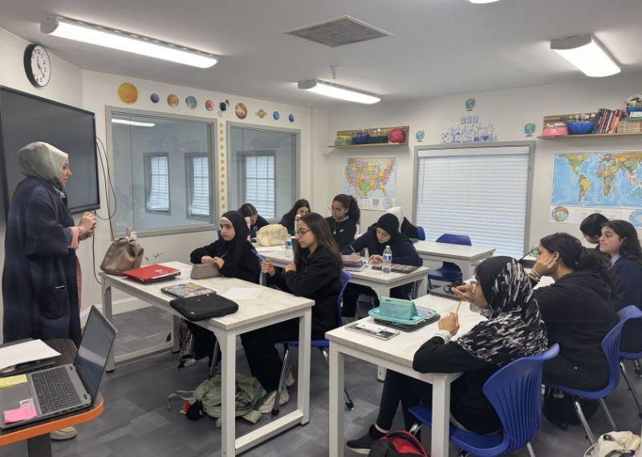
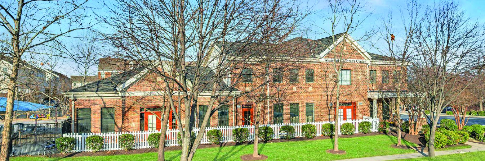

G6 – G12
Ashburn Campus ›
Our middle and high school, in an award-winning building of their own, with labs for STEAM and room for AP and college-credit courses.
IB MYP AuthorizedAP CoursesDual Enrollment

KG – G12 · Ashburn & Chantilly Campuses

The IB has authorized Falcon to offer the Middle Years Programme, Years 1 to 5.

Our middle and high school students explore renewable-energy engineering.

Our elementary students discover how wind and solar energy work.
Photos and short films from our classrooms, trips and celebrations.
Three stages from KG to Grade 12, across our Ashburn and Chantilly campuses.

KG – G5Small classes, strong reading, daily Quran.
Explore › G6 – G8
G6 – G8Eight IB subjects and real-world projects.
Explore › G9 – G12
G9 – G1217 AP courses and up to 60 college credits.
Explore ›IB World School for the MYP, College Board AP, and college credit with NOVA.
Falcon Academy is an IB World School for the Middle Years Programme (MYP), authorized in November 2026, and a Candidate School* for the Primary Years Programme (PYP). The school is pursuing IB authorization for the Primary Years Programme. IB World Schools share a common philosophy—a commitment to high quality, challenging, international education that Falcon Academy believes is important for our students.
Falcon Academy is also a Candidate for Accreditation with NCA CASI, NWAC and SACS CASI.
Accreditation Details*Only schools authorized by the IB Organization can offer its programmes. Candidate status gives no guarantee that authorization will be granted. The associate degree is an optional goal and is not guaranteed.
Small classes, Islamic values every day, and a clear path to college.
 01A Community Built by ParentsFounded by the King Abdullah Academy community
01A Community Built by ParentsFounded by the King Abdullah Academy communityIslamic values guide the school day. When King Abdullah Academy closed, its parents and alumni built Falcon to keep a 40-year community together and raise the academic bar for the next generation.
Read Our Story
02Learning by DoingReal projects, challenges and service daysStudents build, test and present real projects in teams, take part in challenges like KidWind, and lead service days in the community.
03Personal Attention for Every ChildAbout 10 students for every teacherWith about 10 students for every teacher, lessons are adjusted to where each child is. Teachers notice early when a child needs help or a new challenge, and every teacher who joined in our first year is a co-owner of the school.
Meet Our Faculty 04Clubs After School and on WeekendsSTEAM, cooking, art and more
04Clubs After School and on WeekendsSTEAM, cooking, art and moreWeekday and weekend clubs such as STEAM challenges, cooking and art, after the school day ends.
 05IB Learning With Islamic ValuesIB inquiry, with Quran and prayer every day
05IB Learning With Islamic ValuesIB inquiry, with Quran and prayer every dayFalcon is an IB World School for the MYP and an IB Candidate School* for the PYP. Students learn through the IB inquiry approach, and prayer, Quran and Islamic Studies are part of every school day.
How We Teach 06A Safe, Modern CampusSecure buildings and a fenced play area
06A Safe, Modern CampusSecure buildings and a fenced play areaClassrooms set up for group work, a large outdoor playground and a basketball court. How we keep students safe:

07A School Built to LastFinancially stable, with a five-year planFalcon is financially stable, led by experienced entrepreneurs, and follows a five-year academic plan that prepares students for college.
Grades are split by campus.
Our middle and high school, in an award-winning building of their own, with labs for STEAM and room for AP and college-credit courses.

Where our youngest students start school, with a homeroom teacher who knows every child and a playground, soccer field and courts to play on.
I had doubts, but it’s so much better than I expected. The classrooms are actually big.
This is definitely smaller than KAA, but the environment is no less than KAA’s. I am so happy for my child.
I thought Falcon wasn’t going to be good, but now I don’t think that. I’m so excited.
Come see Falcon for yourself. Tours run every weekend at both campuses.
Book a TourHow to Apply